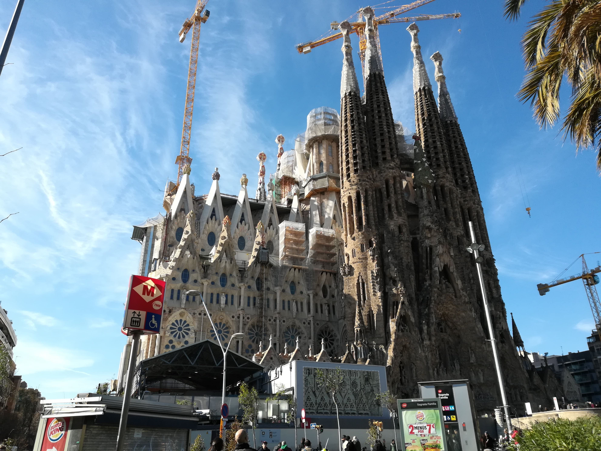
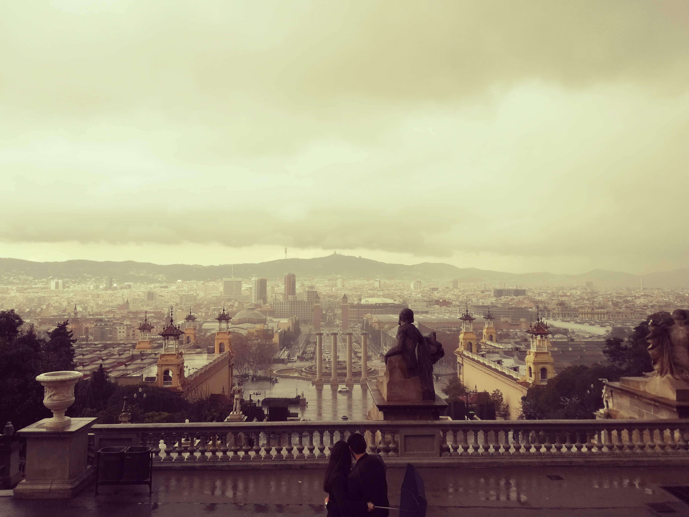
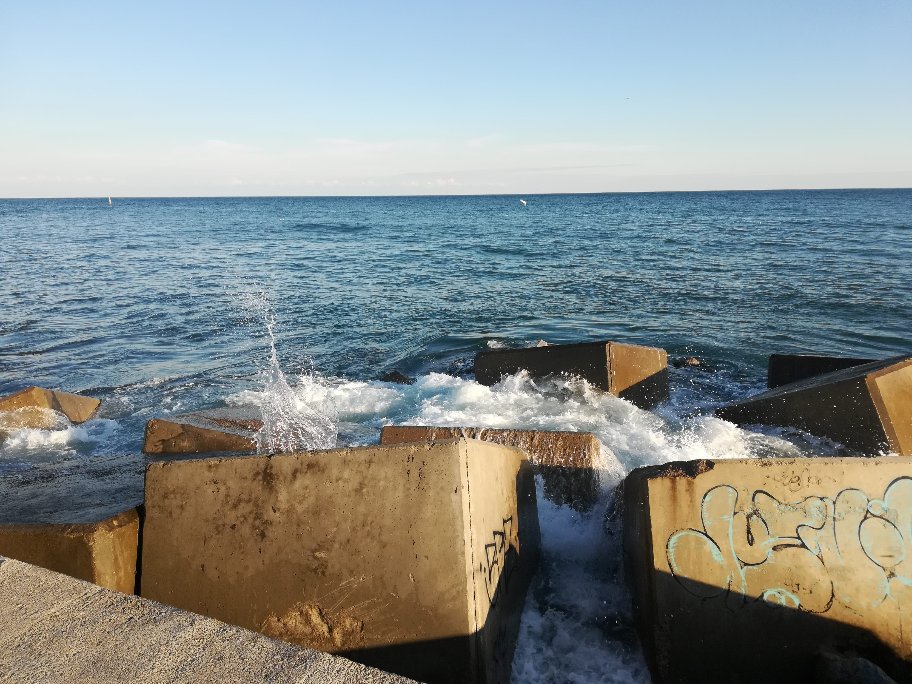

Barcelona
Kurztrip nach Spanien

Nach unserer Mittagspause im Park war unser nächstes Ziel die Sagrada Familia. Als wir vor der riesigen Kirche ankamen, waren wir schon sehr beeindruckt von der Größe des Baus und der detaillierten Arbeit der Baumeister. Eigentlich hatten wir nicht vorgehabt, auch in die Basilika zu gehen, aber die Bilder aus dem Internet reizten uns dann doch – und es hat sich gelohnt. Wir hatten Glück mit dem Wetter, sodass die Sonne wunderschön durch die großen, bunten Fenster schien und ein Farbenspiel auf den hellen Boden des Kirchenschiffs zeichnete. Als wir unsere Besichtigung beendet hatten, ging die Sonne schon fast unter- es war ja immer noch Februar. Deshalb machten wir uns auf den Weg zurück ins Hotel. Dort hatten wir uns für den Abend im Restaurant einen Tisch reserviert und ließen den schönen Tag kulinarisch verwöhnt ausklingen.
Der nächste Morgen war schon der Beginn unseres letzten ganzen Tages in Spanien. Für diesen Tag hatten wir geplant, es entspannt angehen zu lassen und nur den halben Tag in der Stadt zu verbringen. In einem kleinen Restaurant in der obersten Etage eines Einkaufszentrums frühstückten wir und sahen dabei auf einen Platz mit unendlich vielen Tauben und Papageien. Passanten scheuchten die Vögel immer wieder auf, andere fütterten sie und so kam es zu einem von oben wunderbar anzusehendem Spektakel. Nach dem Frühstück ließen wir uns von der Masse tragen und fuhren mit der U-Bahn zu einem Knotenpunkt, ohne zu wissen, was uns an der Oberfläche erwartet. Wir wurden auf einem großen Platz ausgespuckt der in einer breiten Straße hoch auf den Hügel führte auf dem ein großes, öffentliches Gebäude stand – das Museu Nacional d'Art de Catalunya. Es machte einen sehr imposanten Eindruck auf uns und wir wollten es uns gerne aus der Nähe anschauen. Das Wetter machte uns jedoch einen Strich durch die Rechnung. Von dem Platz an dem wir standen hoch bis zum Eingang war es nur eine Strecke von 10 Minuten doch auf der Hälfte fing es sehr stark an zu regnen und oben waren wir dann bis auf die Haut durchnässt. Wir ließen also Museum Museum sein und machten uns direkt wieder auf den Weg zurück ins Hotel.
Dort zogen wir uns um und beschlossen dann, noch ein wenig Sport im Fitnessstudio des Hotels zu machen. Den Rest des Nachmittages regnete es weiter und wir entspannten uns im Hotelzimmer und bereiteten langsam unser Gepäck für die Rückreise am nächsten Morgen vor, da der Flieger schon recht früh ging. Als wir am nächsten Morgen auscheckten, verließen wir eine Stadt, die bei uns viel Eindruck hinterlassen hatte, obwohl wir nur so kurz dort gewesen waren. Vielleicht sehen wir sie uns ja irgendwann noch einmal genauer und länger an und sammeln tiefer gehende Eindrücke und lernen die Stadt noch ein bisschen besser kennen.